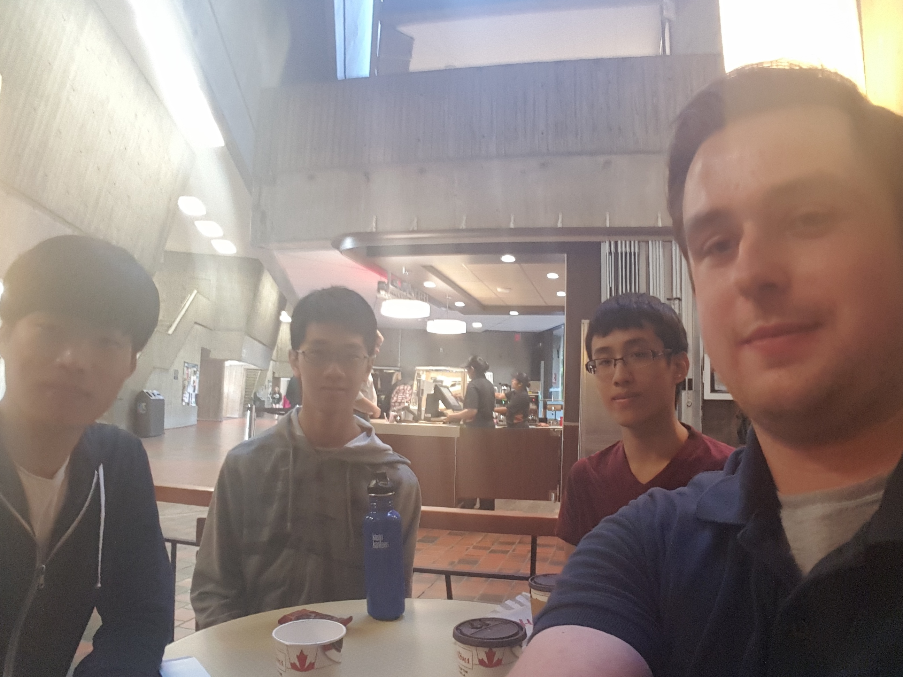

We are J3S (Our logo is in the top left corner!). A team of students in CSC C01 at the University of Toronto Scarborough.
Our main goal is to create a product that our client will find useful and easy to use. To achieve this we hope to use the knowledge we've acquired in computer programming, as well as our ability to work well in a team environment.
This is the first time that our team has worked together but our ability to collaborate has already shown to be quite strong. The team has an array of expertise that combines the talents of seasoned Java developers with theoretical computer scientists. We hope to use the strengths of all team members to create a team that is more than the sum of its parts.
My name is Justin Sabourin. I am a third year student in Computer Science specializing in the Software Engineering stream at the University of Toronto Scarborough. Throughout my time at UTSC, I've learned a variety of programming languages (Java, C, Python, Javascript) and used them in an assortment of projects ranging from a regular expression parser to an android application. I've also completed a co-op work term at IBM as a developer, where I was able to gain experience in web development. My time at IBM introduced me to agile development and web frameworks such as Angular JS, Express JS and Spring MVC. In my personal time, I enjoy learning new web technologies and frameworks such as React, Meteor or anything Javascript related. In the future, I hope to have a career as a software developer specifically in mobile and web application development.
Hello, my name is Jie He, I am currently a 3rd year student in the Specialized Computer Science program at the University of Toronto Scarborough. I started programming when I started high school in 2009 where I developed an interest in the field of computer science. I have used several programming languages in my life and my favourite langugage, and the one I am most skilled at is Java due to it's object orientation, and how it compiles code at runtime as a high level language. My main interests are in theoritical computer science in particular about algorithms (and it's design), data structures, and automata theory. I am also interested in app development and design in the gaming industry, where I like to study how an app is designed to be massively large and profitable as a game.
My name is Sirim Shin. I'm a third year computer science student at the University of Toronto Scarborough. I'm also a double Computer Science and Mathematics major. I am currently working as a member of a CSCC01 group for a project called ‘Open Exoplanet Catalogue’. In next term, I plan to pursue a minor in Statistics. My current interest in Computer Science is practical computer programming. So far, I've taken many theoretical courses so I'm very excited to do actual coding and to create a useful App. So CSCC01 could my favorite course that suits my interests. After graduation, I would like to start my career at an App development company or gaming industry like Google, and Riot where I can learn enormous computer programming skills and knowledge. After obtaining programming skills at a company, I plan to develop a fun software and start my own business in the future. I also like traveling and meeting new people so I want to have experience working in several different companies in several different countries.
My name is Jason Chan. I am a second year computer science student at the University of Toronto Scarborough. I am specializing in software engineering and if possible also want a minor in statistics. So far, CSCB07 Software Design is my favourite course and so I am looking forward to this class and the project. I have worked on two group projects in the past. The first was in high school where my teammate and I created a solitaire game. The second was in CSCB07 where we created a filesystem that was similar to the one Linux computers. For both of these I used Java, so I am most familiar with this programming language. Since CSCC01 is my first C-level course, I hope to learn a lot and look forward to taking more upper year courses.
This is the team enjoying a coffee at Tim Horton's together.
We will use Slack as the main form of communication, integrated with Skype for voice chats.
In the case of an emergency we will use text to get a hold of one another, but a period of 24 hours to respond otherwise.
We will have weekly meetings on Thursday from 3 - 4. If extra meeting time is needed, Tuesday is an optional meeting day.
The weekly meetings on Thursday is mandatory for all group members
We will meet near HW216, to have a face-to-face meeting on Thursday. The minutes will be kept track of by Justin and should take about 30-45 minutes. On Tuesday, we will have a group conversation via skype or slack.
Each team member will prepare to discuss what they've done that week. They will also be ready to discuss any problems that they've found.
We will be using git flow to separate work into branches. Each branch will be where the developer implements a user story/task. Once implemented, the person working on the branch will then open a pull request to merge their work into the main branch. Therefore, developers can commit whenever they like without affecting others.
At the weekly meetings we will discuss what needs to be done for the week, put them on Trello and assign people to work on it.
When a pull request is created, the developer(s) will assign someone to review the pull request. The reviewer will comment on the pull request if they are confused about something or find a mistake. The reviewer and developer(s) will communicate back and forth, changing things if necessary, until the reviewer accepts the pull request.
We will need to reach contact with the TA for more academic inquiries and conflicts with team meetings and such, or the instructor for cases for which a team member drops out or is academically dishonest.